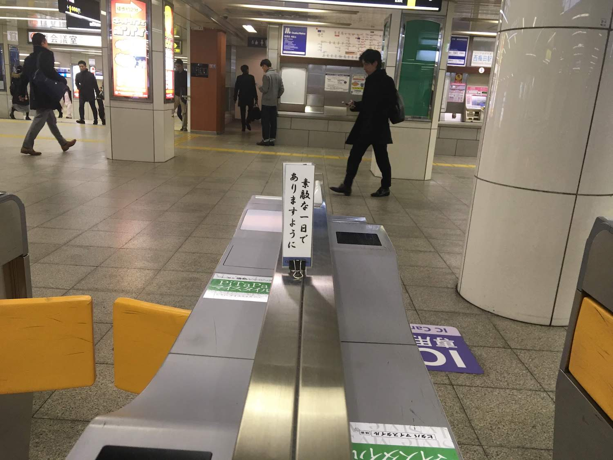

このテンプレートについて
CLASS名"mousedragscrollable"のUL要素内のLI要素に写真を埋め込み、CSSstyle.cssで横一列にスタイリング。
【JavaScript】スクロールをマウスドラッグで可能にする | マウスドラッグスクロール | JS | jQueryプラグイン(拡張) - IT the Best
を参考に、JavaScriptscrollable.jsを使って、CLASS名"mousedragscrollable"の要素をマウスドラッグでスクロールできるようにしました。
テンプレート内のフォルダ img に表示したい写真を入れ、CLASS名"mousedragscrollable"のUL要素内のLI要素内にあるIMG要素のリンク先を変更すると、ページに表示される画像を編集することができます。
文字の大きさ・色・フォントなどを指定するCSSはindex.htmlのHEAD内にまとめています。
全標準フォント一覧Color Names — HTML Color Codesなどを参考に、CSSを編集しご自由にお使いください。